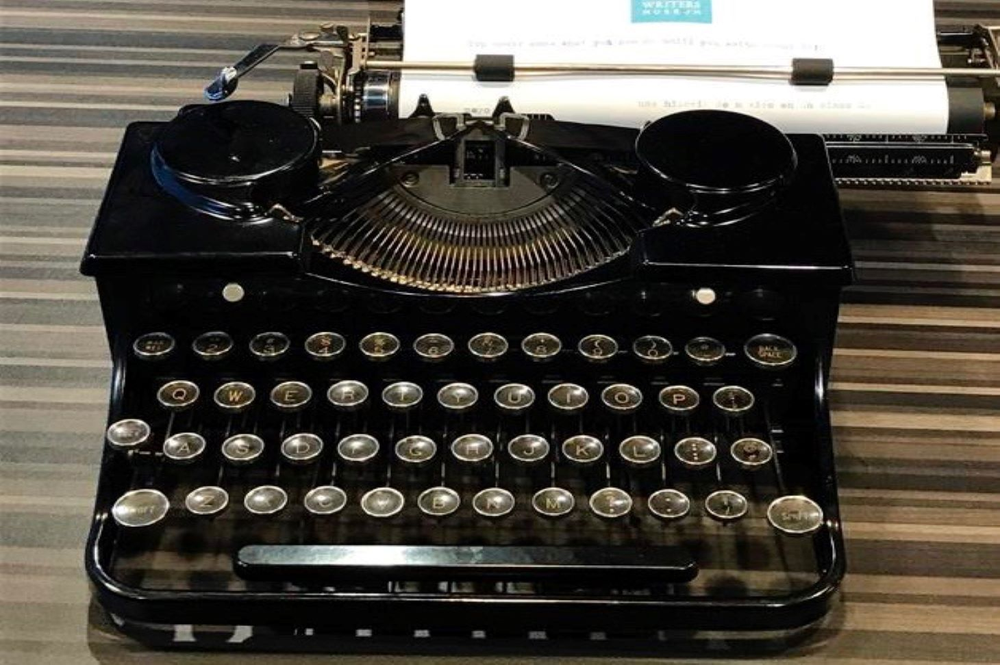
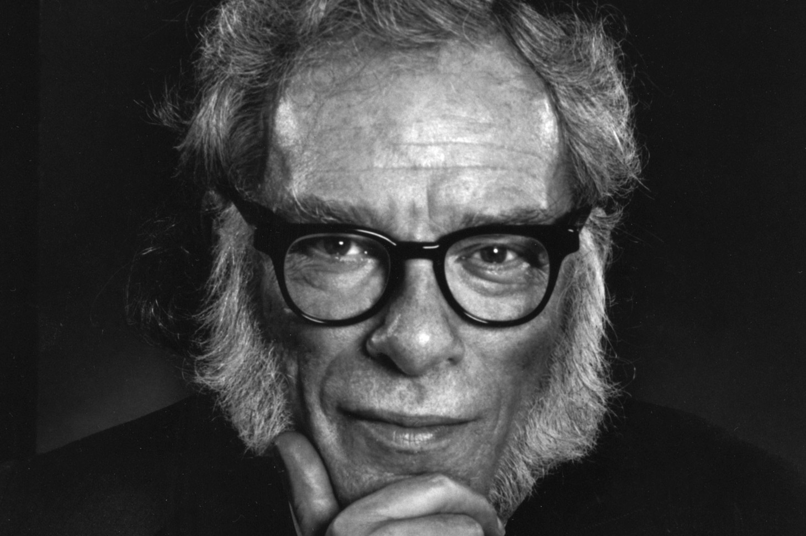
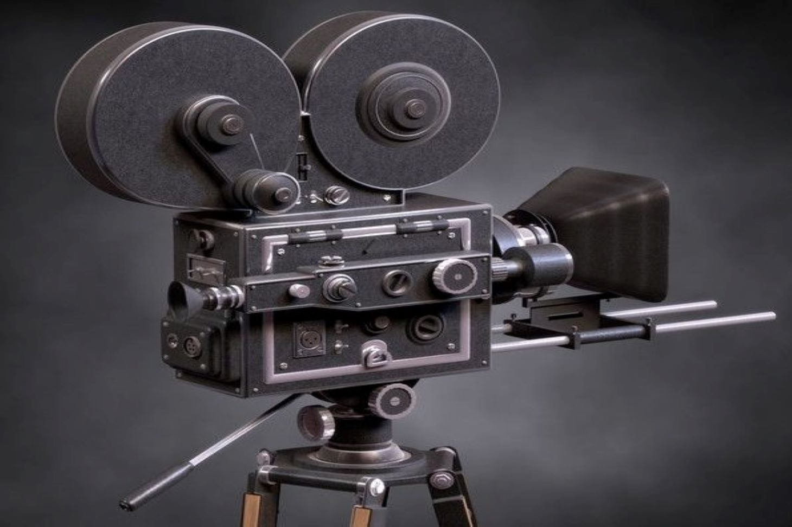

Isaac Asimov was an American writer and professor of biochemistry
at Boston University. He was widely known for his works of science fiction and popular science.
Asimov wrote a library of hard science fiction, including hundreds of books. Asimov's most famous work
is the award-winning Foundation series. His other major series are the Galactic Empire series and the
Robot series. Along with Robert A. Heinlein and Arthur C. Clarke,
Asimov was considered one of the "Big Three" science fiction writers during his lifetime.
Sci-Fi Novels:
Asimov was a prolific writer, and wrote or edited more than 500 novels and books.

Isaac Asimov
"The true delight is in the finding out rather than in the knowing."

Sci-Fi Films:
So far, six films have been adapted from Asimov's works of hard sience fiction.

Asimov also wrote mysteries and fantasy, as well as much nonfiction.
Most of his popular science books explain concepts in a historical way, going as far back
as possible, to a time when the science in question was at its simplest stage.
Examples include Guide to Science, the three-volume set Understanding Physics, and Asimov's
Chronology of Science and Discovery. He wrote on numerous other scientific and non-scientific
topics, such as chemistry, astronomy, mathematics, world history, and literary critique.